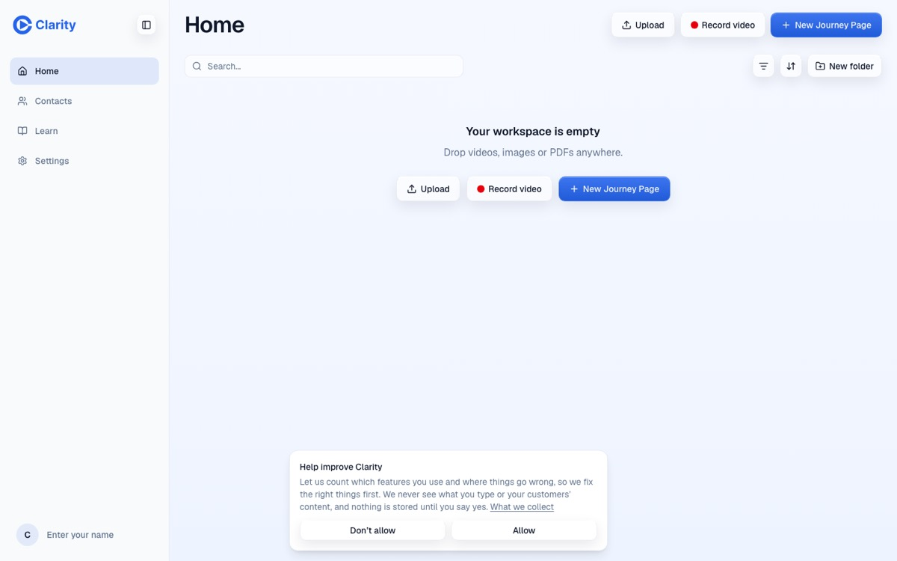
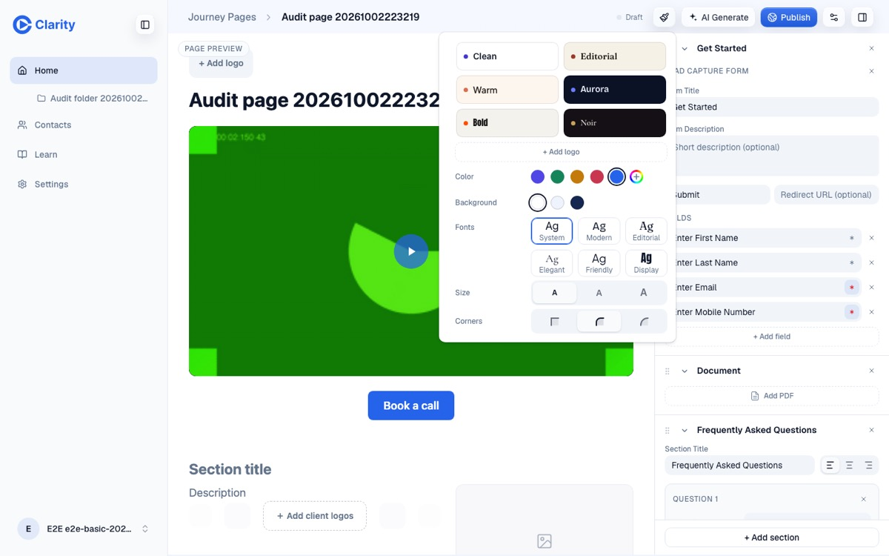
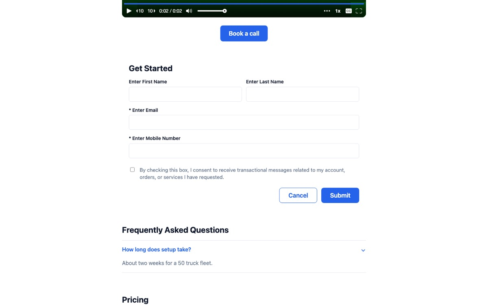

Clarity, ten times simpler
Customers use Clarity for one thing. They record a video, send the link, and see whether the prospect watched. Most of the rest of the product sits around that loop, and almost nobody touches it. The way to make Clarity feel ten times simpler is to make that loop the whole product, finish it properly, and move everything else out of the way.
Today the loop is fast and still feels unfinished. It takes 6 clicks and about 20 seconds from the login screen to a copied link, and the link is live 81 ms after Stop. But what the prospect opens is a bare video called "Untitled Video", with no name, no face and no button. Then the rep can't find the page in their own Library. The page builder around the loop has 8 block types, 28 style controls and up to 183 visible controls in the editor. Customers use one block.
What people actually do
All figures are customer accounts only, with internal and test accounts excluded. Windows are counted back from 2 October 2026.
| Signal | Measured | What it means |
|---|---|---|
| New customer pages that are only a video (hero block, nothing else) | 70% in the last 30 days | The page builder is not the product. The video link is. |
| New customer pages made from one recorded video | 97 of 139 in 30 days | Record then share is the main path. |
| CTA clicks that hit the hero's primary button | 764 of 1,082 ever | One button does the work. Payment, sign and custom buttons were each on 3 or fewer new pages. |
| Gallery block on customer pages | 16 pages ever, 12 owners | Built recently and barely used. |
| Summary block on customer pages | 9 pages ever, 6 owners | Same. |
| Rolling logos variant | 17 blocks, against 1,240 static | An option nobody picks. |
| Theme set on a customer page | 24 pages, 15 owners. Font, size, corner or background overrides on 10 pages from 5 owners. | The presets are enough. |
| AI generation | 17 runs in 30 days, all edits, 0 new pages. 7 customer pages carry a generation id. | Strong when used (6.8 s to a full page), but people don't reach it. |
| Folders | 69% empty. 11 nested below the top level, in 3 workspaces. 6 created in 30 days. | Nested folders are not used. |
| Learn | Content last edited November 2024. 0 training video plays in 90 days. | A sidebar slot for content nobody watches. |
| Contacts | 1 contact added by hand in 30 days. No imports since March 2025. | A CRM table nobody maintains. |
| Customer and affiliate admin roles | 3 of 16 org admins signed in within 90 days. 22 corporate accounts have never signed in. | The roles exist, but the product shows these admins nothing different from a rep. |
| Rep notification preferences | Stored on 191 profiles. No email is ever sent, and no screen sets them. | Dead data. |
| New customer pages that got at least one view | 28% in 30 days | Most links are never opened, or never sent. Worth asking why before adding features. |
Internal accounts made 71% of all pages created in the last 30 days. Any dashboard that doesn't filter them out will mislead product decisions.
The target shape
Clarity has one object, a video page sent to a person. Everything a rep does either makes one, sends one, or reads what happened to one.
- Record. The recorder asks one question before the take: "Who is this for?" That answer names the video, the page, the link and the page headline. It fixes "Untitled Video" at the source.
- Page. The page builds itself from the answer and the rep's profile. It shows the rep's name, photo, company logo and one button, their calendar link. The editor becomes the exception, not a step.
- Share. The finish screen says the link is live and shows a thumbnail of what the prospect will see. Copy link is the primary action.
- Know. Home lists sent pages by prospect and last activity ("Dana at Acme watched 100% today"), not a file manager of videos, images and documents.
Cut
Each cut removes a control from the screen, not data from the database. Existing pages that use a removed block keep rendering.
| Cut | Evidence | What replaces it |
|---|---|---|
| cut Learn from the sidebar and the mobile tab bar | 0 plays in 90 days. The videos cover an older product and carry another brand. | Nothing, or one 60-second first-run video recorded in Clarity, shown once. |
| cut Summary and Gallery from Add section | 9 and 16 customer pages ever. | Document covers files. AI can still add a table if asked. |
| cut Rolling variant and the three color modes on Logos | 17 rolling blocks against 1,240 static. | One static logo row. |
| cut Fonts, Size, Corners and Background in Page style | Overrides on 10 customer pages from 5 owners. | The six presets, shown as previews of the rep's own page. |
| cut The alignment switch next to every title | Seven blocks each carry one. They add about 20 controls to a full page. | One sensible alignment per block. |
| cut Form redirect URL, per-field Required toggles, Cancel button and the mobile-number default | 2 new customer pages with a form in 30 days. The form asks four fields to say "I'm interested". | An email field and an optional message. Submit confirms in place. |
| cut Search, filter, sort, New folder and the duplicate start buttons on an empty Home | A new user sees three ways to start, shown twice, plus tools for zero items. | One "Record a video" call to action. Upload and a blank page appear as text links below it. |
| cut Folder nesting | 11 nested folders across 3 workspaces. | One level of folders. Existing nested folders flatten or stay readable. |
| cut Import from URL | It handles images and documents only. Its use is unmeasured, and it is hidden inside the media picker. | Upload and drag and drop. |
| cut Billing tab | It says "Add a payment method" and has no button to do it. | A "Manage billing" link on the subscription line, which opens Stripe. |
| cut Profile's work and home phone, full postal address and timezone | 15 fields, none of which appear on a page. | Name, photo, company and calendar link, the four fields a page uses. |
| cut Contact CRM fields (department, industry, job title, phone types) and CSV import | 1 manual contact in 30 days. No imports in 18 months. | Leads (see Merge). Export stays. |
| cut The mobile More drawer | Three of its four items are already in the tab bar. | Two tabs, Record and Pages. Settings moves behind the avatar. |
| cut Notification preference storage | 191 profiles hold toggles that do nothing. | Nothing until a notification email exists. |
| cut Layout and device pickers while recording | They stay clickable mid-take. A take has one layout. | They hide on Record. |
| cut Edit as both a hover button and a menu item on cards, and Share inside the video modal | Up to 10 actions per card, three of them duplicates. | One primary action (Open), one secondary (Copy link), one menu. |
Merge
| Merge | Why |
|---|---|
| merge Profile, Branding and Password into one "You" page | Company is asked twice today. Logo and color are asked in three places (Branding, the canvas, the style panel). A rep has one brand. |
| merge Video statistics into page statistics | Prospects watch pages, not files. The page modal already shows plays, retention and location per video. |
| merge Contacts into Leads, attached to pages | A form submission belongs to the page that captured it. Today submissions land in a table with no link back. |
| merge The three meanings of Share into one | Share on a page card opens a dialog. Share on a video card creates a new page and opens the editor. The recorder has Copy link. Share should always mean "give me the link to this video's page". |
| merge Canvas and side panel editing | Every field exists twice. The roadmap already moves editing onto the canvas. Finishing it halves the editor. |
| merge Sign in and Get started on the marketing site | They lead to the same login screen. |
| merge Retired-route and not-found responses into one branded page with a way home | Today they are bare monospace text. |
Make it delightful
These are the few additions worth making. Each one finishes the core loop rather than widening the product.
render-blocks.ts).- add "Who is this for?" in the recorder. It is one text field above the preview, and it names everything downstream.
- add The fast-path page carries the rep. It shows the rep's name, photo, company logo, the prospect's name as the headline, one calendar button and a quiet "Sent with Clarity" line. All of it comes from the profile and the recorder answer.
- add The page exists in the Library the moment it exists. Today the recorder's page is missing from Home until it is edited and saved, and then it shows a stale name.
- add Home shows activity, not files. Each card gets the prospect and the last thing they did. The data already exists in page statistics.
- add The finish screen previews the prospect's view. "Your page is live" with a thumbnail, so the rep trusts the link before sending it.
- add Empty sections never publish. A "Pricing" heading over nothing reached the public page in the walkthrough.
- add A new account lands in the recorder. The first Home visit should already have the first sent page on it.



Keep
These already feel right. Simplifying must not break them.
- The login screen. It has one field and creates an account on the same screen. Lookup takes 36 ms, and signup reaches Home in 1.3 s.
- The link exists before Stop. Copy link is ready 81 ms after the take ends.
- The recorder finish screen, with play, Trim, Edit Preview, Re-record, Open page and Copy link.
- Recorder defaults. Layout tiles, a record button named after what it records, clean device names and a live mic meter.
- One filmstrip dock for trim and preview, shared by the recorder and Edit Video.
- The share dialog. One sentence of state, one link, one password switch. Publish takes 0.34 s.
- AI Generate. One box, example chips, and 6.8 s to a full page.
- Page statistics. A mini page beside three numbers, then plays, retention, location and clicks per element.
- The public page. 314 KB, ready in 0.3 s, no Clarity chrome, the video first.
- Speed throughout. Home loads in 0.84 s, the editor in 0.85 s and the recorder in 1.7 s. Admin copy is written in plain sentences.
Bugs found on the way
- A take abandoned by navigating away leaves a "Preparing video" card that never resolves, and no recovery card appears on return.
- The lead form's mobile number field accepts any text, and that text lands in the Contacts phone column.
- The lead form confirmation replaces the page with "Form submitted successfully" and no way back.
- The Record button stays active beside the "No camera or microphone found" card. This was seen headless and still needs checking on a real machine with the camera denied.
- Settings tabs clip on a phone, and the mobile editor's panel toggle made no visible change.
- Of 51 takes on the new recorder in 30 days, 35 were discarded, and so were 21 of 29 uploads. That may be re-records working as designed, or a flow that loses work. It is unexplained and should be checked before the recorder changes.
- RUM shows about 16,000 successful password sign-ins in 30 days against a small set of signed-in accounts. Synthetic monitoring is the likely cause (a guess). Filter it out before reading sign-in metrics.
Order of work
Subtract first, then finish the loop on the simpler base.
- Pure cuts, one small PR each, no data changes. Learn out of navigation. Summary, Gallery and Logos variants out of Add section. Page style reduced to presets. Alignment switches gone. Billing tab folded into Subscription. Profile trimmed to four fields. Empty-Home tools hidden. Mobile More drawer removed. Branded not-found page.
- The core loop. "Who is this for?" in the recorder. The fast-path page carries the rep. The page appears in the Library at once. Share means one thing. The lead form becomes one field. Empty sections never publish.
- The new Home. Sent pages by prospect and activity. Video stats merged into page stats. Contacts become Leads per page. On mobile, two tabs.
- The editor. Finish canvas editing and remove the side-panel fields one control at a time.
Decisions that are William's
- Analytics consent. Cutting the banner may conflict with EU consent rules. The options are to show it only on the marketing site, ask once at signup, or move to cookieless measurement that needs no consent. Recommended: ask at signup.
- Publish model. The recorder's page is live at once, but any edit takes it out of sync until Publish is pressed again. Recommended: once a page is published, Done publishes, and Unpublish stays available.
- Contacts become Leads. This drops CRM editing for the few who use it. Existing contacts stay exportable.
- Customer and affiliate admins. Either give them a team view of pages and activity, or stop presenting the role as a feature.
- FAQ, Pricing, Document and Form. They were heavily used in the old app (FAQ by 633 owners, Pricing by 431) and lightly used since. Recommended: keep them in Add section and drop them from new-page defaults.
Method and limits
The usage census ran read-only aggregate queries against production D1 and RUM. It counted no names, emails or page content. Some things are not stored anywhere, including recorder layout choice, share dialog opens, downloads, consent choices, and visits to Learn, Contacts and Settings. The sign-in date undercounts activity, and page views include owners opening their own pages. The walkthrough ran on staging with a fake camera, so recorded takes are test patterns. Control counts were taken by script from the first viewport.